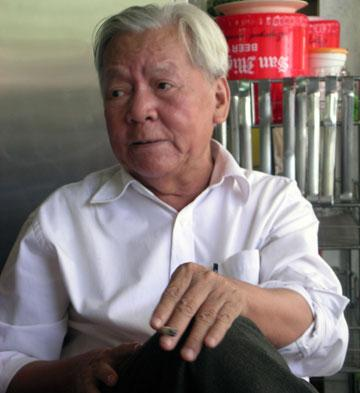

Tên khai sinh: Trần Trung Phương. Sinh ngày 8-7-1938.
Quê quán: Bình Lục, Hà Nam.

Tham gia kháng chiến chống Pháp từ khi còn rất nhỏ. Sau tháng mười năm 1954: là cán bộ Phòng văn nghệ và Nhà sáng tác Sở Văn hóa Hà Nội, cán bộ biên tập Xưởng phim Tổng hợp Tp. Hồ Chí Minh, biên tập viên tuần báo Văn nghệ TP. Hồ Chí Minh. Hội viên Hội nhà văn Việt Nam, hội viên Hội nghệ sĩ Sân khấu Việt Nam.
Ông có nhiều tác phẩm được tặng Giải thưởng của Hội Nhà Văn và Hội Nghệ sĩ Sân khấu.
Tác phẩm chính đã xuất bản:
- Bảy tập thơ trong đó hai tập thơ dịch.
- Gần ba chục tiểu thuyết và truyện ngắn.
- Hàng chục vở kịch.
- Năm tác phẩm nghiên cứu lý luận phê bình văn học.
Giải thưởng:
- Giải thưởng Hội nghệ sĩ Sân khấu Việt Nam và Hội LH Phụ nữ Việt Nam năm 1961 cho kịch Xe pháo mã.
- Giải thưởng 1981 – 1983 của Hội nhà văn Việt Nam cho tiểu thuyết lịch sử Đuốc lá dừa.
- Tặng thưởng lý luận phê bình 2002 – 2003 của Hội nhà văn Việt Nam cho tác phẩm Chân dung văn học.
- Giải thưởng Hội văn nghệ Đồng Nai cho tác phẩm Gia Định tam gia.
- Giải A năm 2003 của Hội Nghệ sĩ sân khấu Việt Nam cho tác phẩm Tác gia kịch nói và kịch thơ.